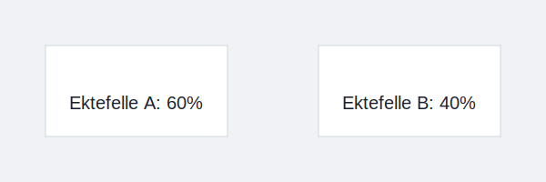

Ektefellefordeling er et sentralt prinsipp i norsk skatterett som gir ektefeller mulighet til å fordele visse fradrag og inntekter mellom seg for å optimalisere sin samlede skattemessige posisjon. Ved å fordele kostnader og inntektsgrunnlag kan ektefeller jevne ut skattebelastningen og utnytte ulike fradragsmuligheter.
Når gjelder ektefellefordeling?
Ektefellefordeling kan anvendes i flere situasjoner, for eksempel ved:
- Fordeling av underskudd i Enkeltpersonforetak eller landbruksvirksomhet
- Spesielle skattefradrag som minstefradrag, personfradrag eller jordbruksfradrag
- Skjerming av inntekter for å holde hver ektefelles inntekt innenfor lavere skattesatser
Se også vår artikkel om Jordbruksfradrag.

Hovedprinsipper for fordeling
Ektefellefordeling forutsetter frivillig avtale mellom ektefellene og krever at begge har skattepliktig inntekt. De viktigste prinsippene er:
| Prinsipp | Beskrivelse |
|---|---|
| Enighet | Ektefellene må avtale fordelingen skriftlig i skattemeldingen. |
| Reell fordeling | Fordelingen må reflektere faktisk økonomisk fordeling av utgifter eller inntekter. |
| Begrensning | Fordeling kan ikke overstige ektefellenes reelle andel av inntekten. |
| Dokumentasjon | Avtalen må dokumenteres i skattemeldingen og eventuelle vedlegg. |
Hvordan gjennomføre fordeling
Følg disse trinnene for å foreta ektefellefordeling i skattemeldingen:
- Avtal: Avklar hvilke fradrag eller inntekter som skal fordeles.
- Dokumenter: Noter avtalen i egen skattemelding for begge ektefeller.
- Fyll ut: Angi andel i skjema RF-1030 (personinntekt) eller RF-1176 (næringsoppgave) for selvstendig næringsdrivende.
- Kontroller: Sjekk at fordelingen er i samsvar med skattemyndighetenes regler.
Eksempel på fordeling av underskudd
| Type virksomhet | Underskudd ektefelle A | Underskudd ektefelle B |
|---|---|---|
| Enkeltpersonforetak | 70 % | 30 % |
Fordeling av jordbruksfradrag
I landbrukssektoren er ektefellefordeling særlig nyttig for å fordele jordbruksfradrag mellom ektefellene. Dette kan utligne forskjeller i inntektsnivå og sikre full utnyttelse av fradraget.
Se våre detaljerte regler i artikkelen om Jordbruksfradrag.
Skatte- og regnskapsmessige hensyn
Ved fordeling må man være oppmerksom på følgende regnskapsmessige og skattemessige aspekter:
- Timing: Fordelingen påvirker kun det året skattemeldingen gjelder.
- Selvangivelse: Ektefellene leverer separate selvangivelser med samsvarende fordeling.
- Internkontroll: Oppbevar skriftlig avtale og dokumentasjon internt.
For mer informasjon om innlevering av skattemelding, se Skattemelding.
Fordeler og begrensninger
Fordeling av fradrag og inntekter gir flere fordeler, men også noen begrensninger:
- Fordeler: Redusert samlet skatt, bedre likviditet, utnyttelse av lavere satser.
- Begrensninger: Må være gjensidig avtale, kan utløse dokumentasjonskrav.
| Fordel | Begrensning |
|---|---|
| Skatteoptimalisering | Krav til skriftlig avtale |
| Bedre likviditet | Risiko for feil ved manglende dokumentasjon |
| Utnyttelse av fradrag | Kan utløse revisjon ved feilrapportering |
Konklusjon
Ektefellefordeling er et kraftfullt verktøy i norsk skatterett som kan gi ektefeller mulighet til å optimalisere skatten gjennom bevisst fordeling av fradrag og inntekter. Ved å følge gjeldende regler, dokumentere avtaler og levere korrekt informasjon i skattemeldingen, kan fordelingen gi betydelige skattemessige fordeler.